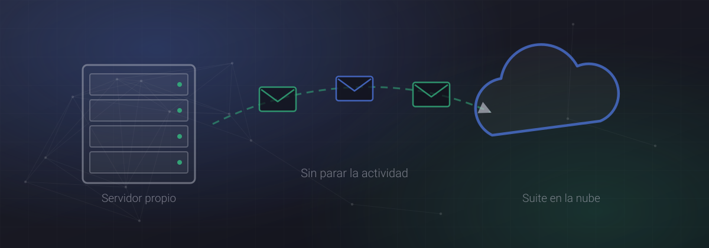
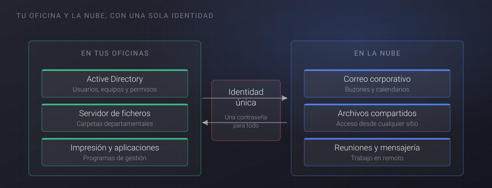

El correo es el sistema que más se nota cuando falla. Una migración mal planteada se traduce en mensajes perdidos, firmas descolocadas, móviles que dejan de sincronizar y un lunes entero improductivo. Bien planteada, la mayoría de la plantilla apenas se entera.

Antes de elegir destino, mira lo que tienes
La decisión entre una suite u otra suele estar tomada de antemano por costumbre o por precio, y no es lo más importante. Lo determinante es el inventario de partida, porque ahí aparecen las sorpresas:
- Número de buzones y tamaño real de cada uno, incluidos los archivos históricos que alguien guarda en local.
- Buzones compartidos, listas de distribución y alias, que casi nunca están documentados.
- Dispositivos móviles configurados y quién los administra.
- Aplicaciones que envían correo por su cuenta: el ERP, la web, el escáner de la fotocopiadora, las alertas del servidor. Estas son las que se olvidan y las que fallan después.
- Reglas de reenvío y respuestas automáticas que la gente configuró y ya no recuerda.
El calendario que funciona
- Preparación. Alta del servicio, verificación del dominio y creación de usuarios y grupos, sin tocar todavía el correo en producción.
- Sincronización de identidades. Si hay un directorio en la oficina, se conecta para que cada persona conserve un único usuario y una única contraseña.
- Copia previa. Se migra el histórico de los buzones con el correo antiguo todavía funcionando. Es la fase más larga y no molesta a nadie.
- Cambio de entrega. Se modifican los registros DNS para que el correo nuevo entre por el destino nuevo. Se hace fuera de horario, normalmente un viernes por la tarde.
- Copia final. Se sincroniza lo que haya llegado al sistema antiguo después del cambio.
- Acompañamiento. El lunes hay alguien disponible desde primera hora, porque las dudas llegan todas juntas entre las 8:30 y las 10:00.
Los registros DNS: donde se cometen los errores caros
Tres registros deciden si tu correo llega y si no acaba en la carpeta de no deseado del destinatario. Conviene revisarlos con calma:
- MX: indica qué servidor recibe el correo de tu dominio. Es el que se cambia el día del cambio de entrega.
- SPF: declara qué servidores pueden enviar en tu nombre. Aquí hay que incluir también el ERP, la web y cualquier sistema que mande correo, o sus mensajes empezarán a rebotar.
- DKIM y DMARC: firman tus mensajes y dicen qué hacer con los que no pasen la comprobación. Cada vez más proveedores los exigen para aceptar correo.
Un consejo práctico: baja el tiempo de vida de los registros a cinco minutos unos días antes del cambio. Así, si algo sale mal, la marcha atrás es cuestión de minutos y no de horas.
Lo que siempre da guerra
- Las firmas corporativas. Se descolocan casi siempre. Merece la pena aprovechar para unificarlas de forma centralizada.
- Los móviles. Hay que reconfigurar cada dispositivo. Prepara instrucciones con capturas y ahorrarás decenas de llamadas.
- Los buzones compartidos. Los permisos no siempre se migran limpios y conviene revisarlos uno a uno.
- El escáner de la fotocopiadora. Deja de enviar correos y nadie lo descubre hasta la semana siguiente. Ponlo en la lista desde el principio.
- Los archivos históricos locales. Suelen estar en el disco del usuario, sin copia, y son justo lo que más echan de menos.
Y no te olvides de la copia de seguridad
Migrar a la nube no elimina la necesidad de copias. El proveedor garantiza la disponibilidad del servicio, no la recuperación de lo que alguien borró hace dos meses. Es un contrato aparte, es barato y forma parte de hacer las cosas bien.